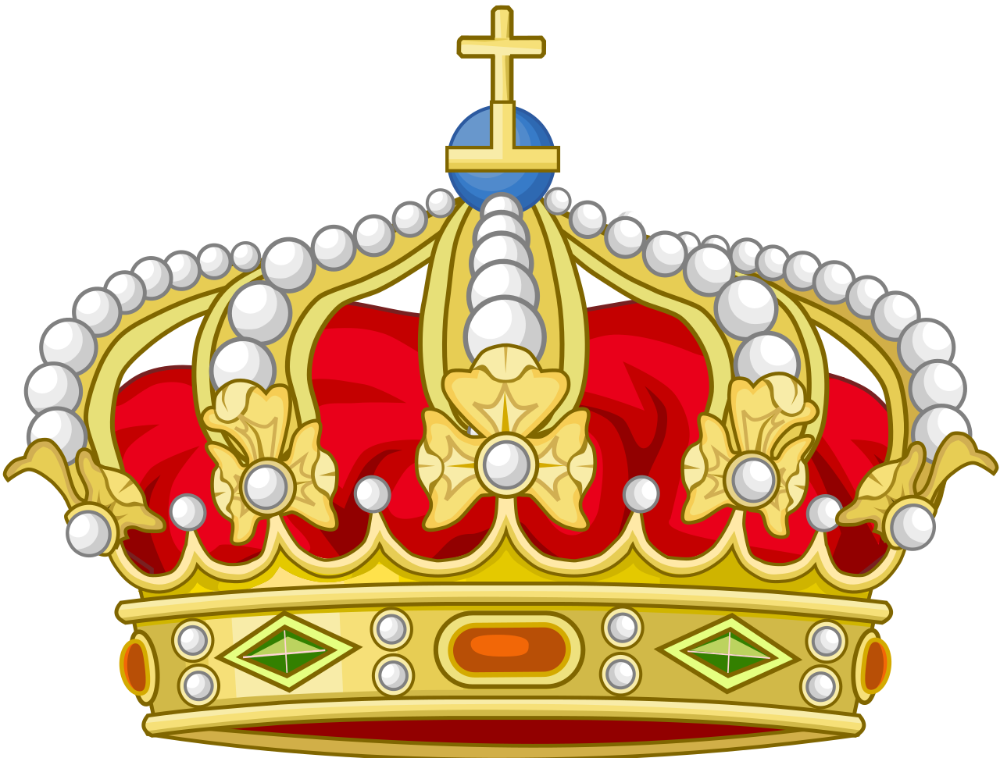
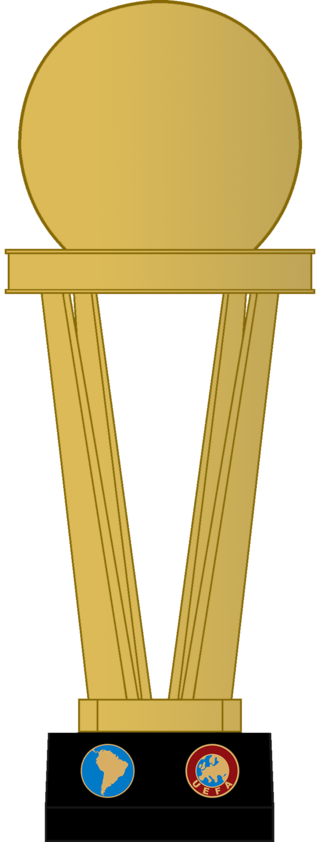
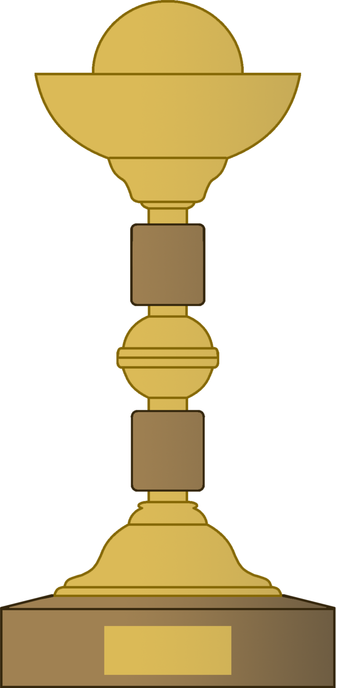
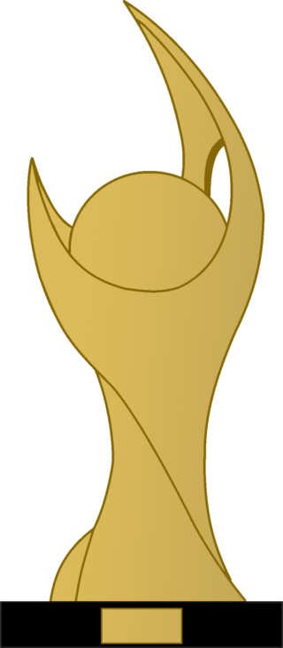
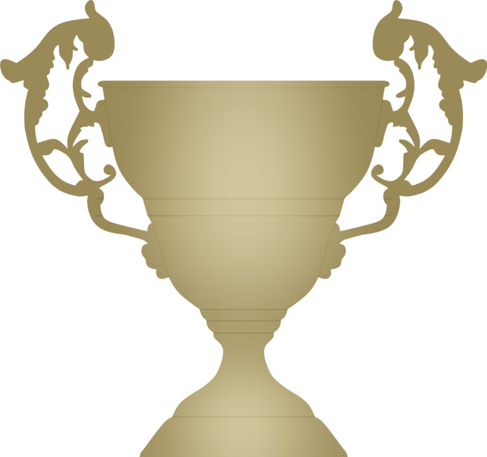
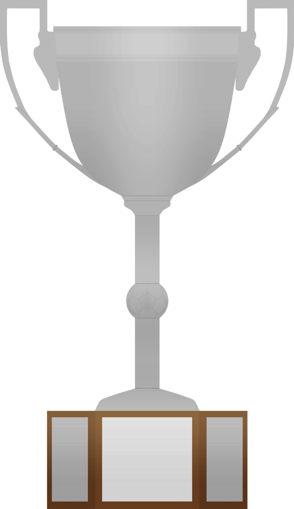

Títulos
| Honorários | |||
|---|---|---|---|
| Competição | Temporadas | ||
|  | Tríplice Coroa |
1981 e 2019 | |
Quádrupla Coroa |
2020 | ||
9º Maior Clube do Século da FIFA |
2000 | ||

|
Melhor Clube da América do Sul e 4º Melhor no Ranking Mundial |
Condecoração outorgada em 2020 pela IFFHS, abrange o período de 1° de janeiro de 2011 a 31 de janeiro de 2020. | |
| Mundiais | |||
|---|---|---|---|
| Competição | Títulos | Temporadas | |
|  | Copa Intercontinental |
1 |
1981 |
| Continentais | |||
| Competição | Títulos | Temporadas | |

|
Copa Libertadores da América |
2 |
1981, 2019 e 2022 |

|
Recopa Sul-Americana |
1 |
2020 |
|  | Copa de Ouro Nicolás Leoz |
1 |
1996 |
|  | Copa Mercosul |
1 |
1999 |
| Nacionais | |||
| Competição | Títulos | Temporadas | |

|
Campeonato Brasileiro |
7 |
1980, 1982, 1983, 1992, 2009, 2019 e 2020 |
Copa do Brasil |
4 |
1990, 2006, 2013 e 2022 | |

|
Supercopa do Brasil |
2 |
2020 e 2021 |

|
Copa dos Campeões |
1 |
2001 |
| Interestaduais | |||
| Competição | Títulos | Temporadas | |
Torneio Rio–São Paulo |
1 |
1961 | |
|  | Taça dos Campeões Rio-São Paulo |
1 |
1955 |
| Estaduais | |||
| Competição | Títulos | Temporadas | |
Campeonato Carioca |
37 |
1914, 1915, 1920, 1921, 1925, 1927, 1939, 1942, 1943, 1944, 1953, 1954, 1955, 1963, 1965, 1972, 1974, 1978, 1979, 1979, 1981, 1986, 1991, 1996, 1999, 2000, 2001, 2004, 2007, 2008, 2009, 2011, 2014, 2017, 2019, 2020 e 2021 | |
| Taça Guanabara | 23 |
1970, 1972, 1973, 1978, 1979, 1980, 1981, 1982, 1984, 1988, 1989, 1995, 1996, 1999, 2002, 2004, 2007, 2008, 2011, 2014, 2018, 2020 e 2021 | |
|  | Taça Rio |
9 |
1983, 1985, 1986, 1991, 1996, 2000, 2009, 2011, 2019 |
Copa Rio |
1 |
1991 | |

|
Torneio Início |
6 |
1920, 1922, 1946, 1951, 1952 e 1959 |
| Total | |||
| Conquistas | Títulos | Categorias | |
| Títulos oficiais |
58 |
1 Mundial, 5 Continentais, 14 Nacionais, 2 Interestaduais e 37 Estaduais | |